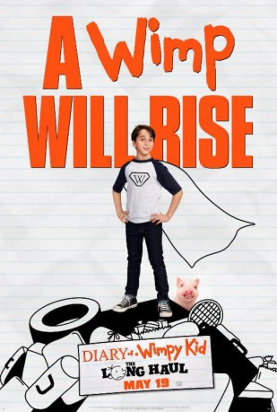
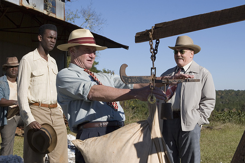
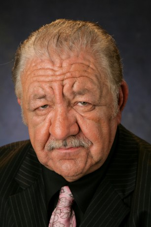

#7212 Gregs Tagebuch 4 - Böse Falle!
Alternativ: Diary of a Wimpy Kid: The Long Haul
 
 IMDB-Wertung: 4.4 / 10
IMDB-Wertung: 4.4 / 10  Metascore: 39
Metascore: 39 
A Heffley family road trip to attend Meemaw's 90th birthday party goes hilariously off course thanks to Greg's newest scheme to get to a video gaming convention. This family cross-country adventure turns into an experience the Heffleys will never forget.
Jahr: 2017
Dauer: 91 Minuten
FSK: 0
Land: USA Studio: 20th Century FoxTonspuren: DTS - ,
Untertitel: Deutsch,
Auflösung: 1080p (1920x808) Größe: 7669 MB
Genre: Komödie, Familie
Regisseur: David Bowers
Drehbuch: Jeff Kinney
Soundtrack:
Darsteller:
- Jason Drucker als Greg Heffley
- Alicia Silverstone als Susan Heffley
 Tom Everett Scott als Frank Heffley
Tom Everett Scott als Frank Heffley- Charlie Wright als Rodrick Heffley
- Owen Asztalos als Rowley
 Joshua Hoover als Mac Digby
Joshua Hoover als Mac Digby Chris Coppola als Mr. Beardo
Chris Coppola als Mr. Beardo- Mira Silverman als Brandi Beardo
- Carlos Guerrero als Luis
-  Danny Vinson als Hog Man
- Neva Howell als Farmer Lady
-  Ricky Muse als Butter Vendor
- Taylor St. Clair als Carnie
 Kurt Yue als Fake Dad
Kurt Yue als Fake Dad- Jacinte Blankenship als Security Guard
- Beth Keener als TV Reporter
- Alexa Blair Robertson als Cute Girl #1
- Courtney Lauren Cummings als Cute Girl #2
- Robert Hendren als Motorcycle Cop
- Sofia Bowers als Pigtails Girl
- Emma Wetzel als Country Fair Girl
- Elijah Marcano als Corny's Host
- Stephen Ruffin als Gamer
- Madison Alsobrook als Expo Kid , uncredited
- Sydney Shea Barker als Fair Teen , uncredited
- Taylor Barton als Fair Kid , uncredited
- Alicia Beshears als Fair Teen , uncredited
- Locklyn Black als Ball Pit Child , uncredited
- Joshua Booker als Gaming Expo Attendee , uncredited
- Maiya Boyd als Corny Heeley Kid , uncredited
- Jamel Chambers als Expo Gamer Attendee , uncredited
- Jeremy Chesser als Corny Patron , uncredited
- Kristen Danielle als Expo Gamer , uncredited
 Juan Gaspard als Festival Vendor , uncredited
Juan Gaspard als Festival Vendor , uncredited- James Gill als Steampunk Giant , uncredited
- Lucky Harmon als Driver , uncredited
- Simone Kiffany Jenkins als Passenger , uncredited
- Kenneth Jones als Mechanic , uncredited
- Tegan Jones als Party Guest , uncredited
- Tylon Larry als Fair Kid , uncredited
- John Merical als Driver , uncredited
- Anthony Vance Pierce als Adult Fairgoer , uncredited
- Candy Rachor als Corny Patron , uncredited
- Dylan Walters als Manny Heffley
- Wyatt Walters als Manny Heffley
- Stephen 'Big Steve' Dupree als Tall Farmer
- Alma Kent als Teen Bystander
- Mimi Gould als Meemaw
 Jody Thompson als Uncle Gerald
Jody Thompson als Uncle Gerald- Anthony Ianitello als Diaper Hands Cosplayer
Datei: X:\4-Tetralogie(A-K)\Gregs Tagebuch\Gregs Tagebuch 4 - Böse Falle! (2017, FSK0, 1920x808).mkv seit 09.10.2017
Festplatte: HD Collection-3(N-Z)-6(A-Z)
 Es gibt insgesamt 7 Filme in der Gruppe '4-Tetralogie(A-K)\Gregs Tagebuch'
Es gibt insgesamt 7 Filme in der Gruppe '4-Tetralogie(A-K)\Gregs Tagebuch'